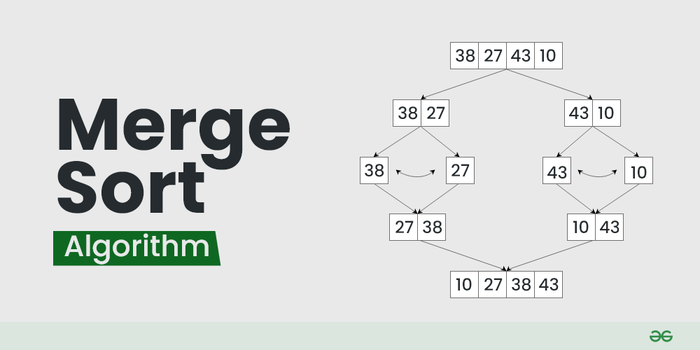
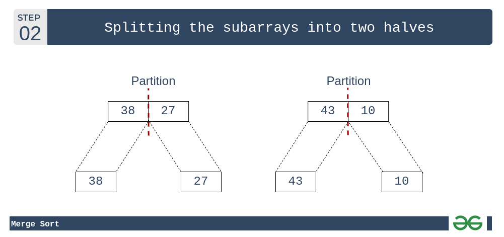
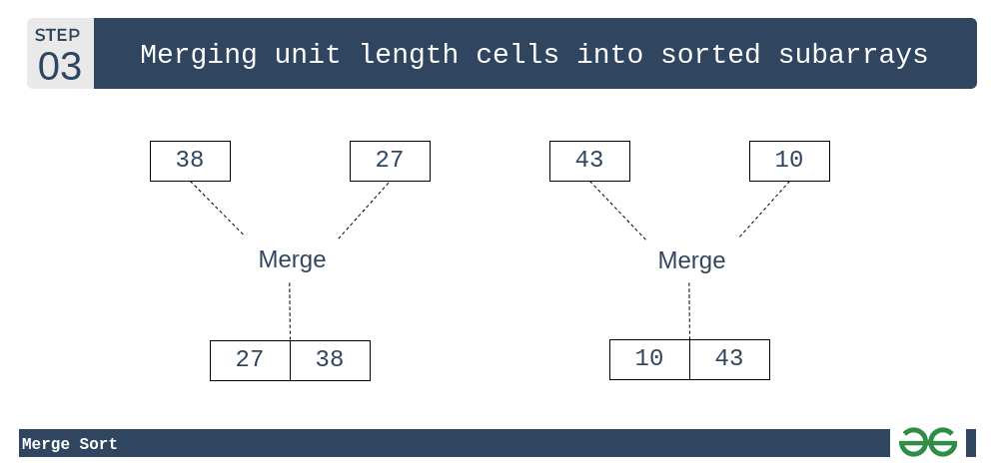
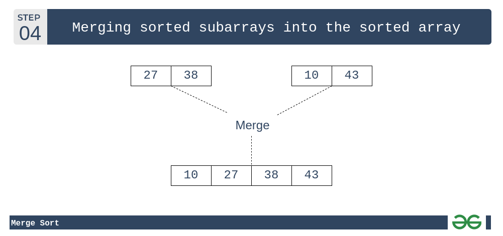

Merge Sort
Merge sort is defined as a sorting algorithm that works by dividing an array into smaller subarrays, sorting each subarray, and then merging the sorted subarrays back together to form the final sorted array.
In simple terms, we can say that the process of merge sort is to divide the array into two halves, sort each half, and then merge the sorted halves back together. This process is repeated until the entire array is sorted.

How does Merge Sort work?
Merge sort is a recursive algorithm that continuously splits the array in half until it cannot be further divided i.e., the array has only one element left (an array with one element is always sorted). Then the sorted subarrays are merged into one sorted array.
Lets consider an array arr[] = {38, 27, 43, 10}
- Initially divide the array into two equal halves:
- These subarrays are further divided into two halves. Now they become array of unit length that can no longer be divided and array of unit length are always sorted.

- These sorted subarrays are merged together, and we get bigger sorted subarrays.

- This merging process is continued until the sorted array is built from the smaller subarrays.

Complexity Analysis of Merge Sort
Time Complexity: O(n log(n))
Merge Sort is a recursive algorithm and time complexity can be expressed as following recurrence relation.
T(n) = 2T(n/2) + θ(n)
The above recurrence can be solved either using the Recurrence Tree method or the Master method. It falls in case II of the Master Method and the solution of the recurrence is θ(n log(n)). The time complexity of Merge Sort isθ(n log(n)) in all 3 cases (worst, average, and best) as merge sort always divides the array into two halves and takes linear time to merge two halves.
Auxiliary Space: O(n)
In merge sort all elements are copied into an auxiliary array. So n auxiliary space is required for merge sort.
Applications of Merge Sort
- Sorting large datasets: Merge sort is particularly well-suited for sorting large datasets due to its guaranteed worst-case time complexity of O(n log n).
- External sorting: Merge sort is commonly used in external sorting, where the data to be sorted is too large to fit into memory.
- Custom sorting: Merge sort can be adapted to handle different input distributions, such as partially sorted, nearly sorted, or completely unsorted data.
Advantages of Merge Sort
- Stability: Merge sort is a stable sorting algorithm, which means it maintains the relative order of equal elements in the input array.
- Guaranteed worst-case performance: Merge sort has a worst-case time complexity of O(n log(n)), which means it performs well even on large datasets.
- Parallelizable: Merge sort is a naturally parallelizable algorithm, which means it can be easily parallelized to take advantage of multiple processors or threads.
Drawbacks of Merge Sort
- Space complexity: Merge sort requires additional memory to store the merged sub-arrays during the sorting process.
- Not in-place: Merge sort is not an in-place sorting algorithm, which means it requires additional memory to store the sorted data. This can be a disadvantage in applications where memory usage is a concern.
- Not always optimal for small datasets: For small datasets, Merge sort has a higher time complexity than some other sorting algorithms, such as insertion sort. This can result in slower performance for very small datasets.